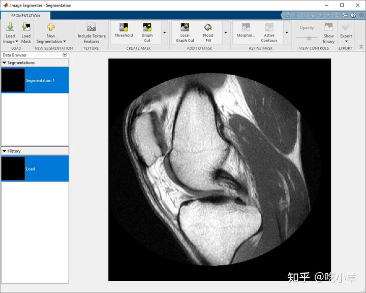
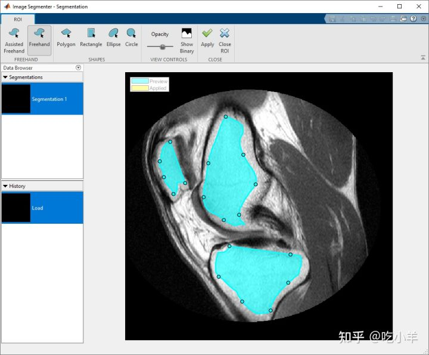
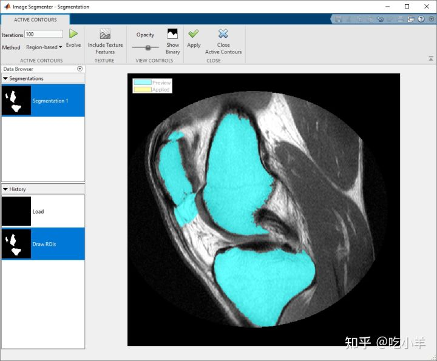
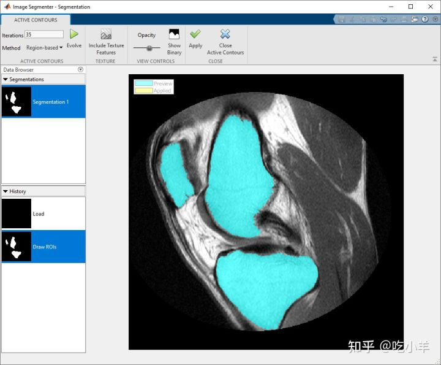
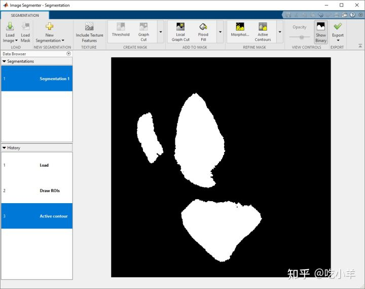

Home
本示例显示如何使用活动轮廓（也称为snake）在Image Segmenter应用程序中分割图像。活动轮廓是一种自动的迭代方法，您可以通过绘制区域（称为种子蒙版）来标记图像中的位置。活动轮廓增长（或缩小）这些种子形状以填充图像中区域的边界。此初始种子蒙版的准确性会影响最终结果。您还可以将“包括纹理特征”选项与活动轮廓一起使用。
所述图像分段应用程序提供了许多不同的分割方法和使用该应用程序可以是一个迭代过程。您可能会尝试多种不同的方法，直到达到您想要的结果。
在图像分割器中加载图像
打开Image Segmenter应用程序并加载要分割的图像。该应用程序可以打开任何可由imread读取的图像。
对于本示例，首先将图像读入工作区。此示例使用膝盖的 MRI 图像。目标是创建一个蒙版图像，从图像中的软组织中分割骨骼。
I = dicomread('knee1');
knee = mat2gray(I);
从 MATLAB® 工具条中，打开Image Segmenter应用程序。在应用程序选项卡上的图像处理和计算机视觉部分，单击Image Segmenter图标

在应用程序工具条上，单击加载，然后选择从工作区加载图像。在从工作区导入对话框中，选择您读入工作区的图像。Image Segmenter会显示您所选择的图像。

您还可以使用imageSegmenter命令在 Image Segmenter 应用程序中打开图像：
imageSegmenter(knee);
加载图像后，您可以选择加载现有的二进制掩码。例如，您之前可能已经在Color Thresholder应用程序中创建了 RGB 图像的蒙版，并且想要优化分割。要加载现有蒙版，请单击加载蒙版。分割掩码图像必须是与您要分割的图像大小相同的逻辑图像。
使用活动轮廓分割图像
要使用活动轮廓分割图像，您必须首先创建分割的粗略估计。例如，您可以使用 ROI 工具创建图像的粗略分割（请参阅相关文章）。您还可以加载现有的二进制蒙版图像。
对于此示例，使用 ROI 工具在要分割的区域中创建种子形状。绘制完区域后，单击应用，然后单击关闭 ROI返回到分割选项卡。

在 Segmentation 选项卡上，在工具条的 Refine Mask 部分中，单击Active Contours。Image Segmenter应用打开活动轮廓选项卡。 要使用活动轮廓，请单击Evolve。该应用程序开始执行迭代以增加种子蒙版以将对象填充到其边界。最初，使用默认的活动轮廓方法（基于区域）和默认的迭代次数 (100)。图像分割器在右下角显示处理进度。查看结果，您可以看到这种方法对三个对象中的两个效果很好，但分割会渗入其中一个对象的背景中。对象边界在该区域中没有那么明确。

获得更好分割的一种方法是重复活动轮廓，减少迭代次数。在迭代框中更改迭代次数，指定 35，然后再次单击Evolve。这一次，分割不会渗入背景。

要保存分割，请单击应用。要返回分割选项卡，单击关闭活动轮廓。
要查看蒙版图像，请单击Segmentation 选项卡上的Show Binary。您可以使用Image Segmenter 应用程序中的其他工具来优化蒙版图像，例如清除边框或填充孔。要将蒙版图像保存到工作区，请单击导出。

======================================================================
我的测试结果及程序
下面是我测试的代码：

注：本文根据MATLAB官网内容修改而成。